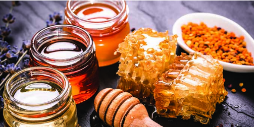
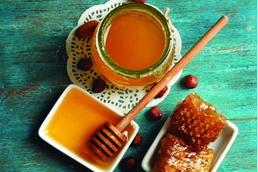
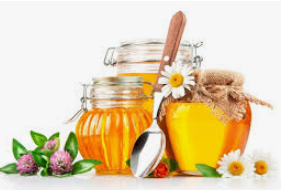

Despre beneficiile produsului
Produs nutrițional
Mierea este un aliment cu numeroase substante nutritive, iar acest lucru il face potrivit pentru mai multe categorii de consumatori, de la copii pana la persoane in varsta. In plus, spre deosebire de zaharul rafinat, mierea este un indulcitor natural, cu numeroase substante necesare bunei functionari a organismului. O portie de 100 de grame de miere de albine contine circa 300 de calorii, dar si: Carbohidrati - 82 g (fibre si zahar); Proteine - 0,3 g; Potasiu - 52 mg; Calciu - 6 mg; Magneziu - 2 mg; Vitamina C - 0,5 mg; Sodiu - 4 mg; Fier - 0,4 mg.
Aliment sănătos
Mierea are proprietati antibacteriene si lupta impotriva infectiilor - unele studii au dovedit eficienta mierii in lupta cu mai multe tipuri de bacterii, inclusiv E.coli sau salmonella. Datorita acestei actiuni, mierea ajuta la vindecarea diverselor tipuri de infectii, inclusvi a celor de la nivelul pielii. Ajuta la vindecarea ranilor si ulceratiilor - acest beneficiu se datoreaza actiunii antibacteriene. Mierea combate proliferarea bacteriilor si va accelera refacerea tesuturilor care au suferit diverse tipuri de rani. Amelioreaza durerile de gat si tusea - pentru ca este un bun emolient, mierea ajuta la calmarea gatului iritat si a acceselor de tuse. In cazul tusei uscate, mierea de albine s-a dovedit a fi chiar un remediu la fel de precum medicamentele pe baza de dextrometorfan (substanta activa din majoritatea antitusivelor). Creste anduranta sportivilor si este o sursa de energie care nu induce hipoglicemia. Mierea induce si un raspuns metabolic pozitiv, fiind un aliment potrivit pentru a fi consumat inainte de antrenament. Unele tipuri de miere, cea de Tualang, de exemplu, ajuta la reglarea glucozei din sange, avand in acest fel un aport in combaterea diabetului. Desi este un aliment dulce, mierea de albine este un desert care in cantitatile potrivite nu contribuie la cresterea riscului imbolnavirii de diabet, asa cum se intampla cu alte produse dulci. Intareste sistemul imunitar si ajuta la ameliorarea simptomelor alergiilor. Mierea stimuleaza productia de anticorpi contribuind astfel la preveniera imbolnavirilor de orice tip si ajutand corpul sa lupte cu organismele patogenele. Este de ajutor in tratarea unor afectiuni ale pielii, printre care dermatita atopica sau psoriazisul. Mierea a fost utilizata la nivelul pielii pentru tratarea diverselor afectiuni inca din anul 2.000 I. Hr. Cele mai vechi civilizatii foloseau mierea ca atare, aplicata pe piele, pentru a vindeca eczeme, arsuri, furuncule. Contribuie la sanatatea sistemului digestiv deoarece contine bacterii bune. Probioticele din mierea de albine ajuta la echilibrarea florei intestinale si la mentinerea unui tranzit intestinal optim. Are un continut ridicat de antioxidanti, elemente care contribuie la prevenirea unor tipuri de cancer. Cercetatorii spun ca mierea contine concentratii diferite de polifenoli, care sunt puternici antioxidanti care se crede ca reduc riscul bolilor de inima, cat si al cancerului.
Mierea-cosmetolog
Mierea de albine este utilizata si in industria cosmetica la scara larga. Studiile au aratat ca mierea poate fi utilizata pentru: ameliorarea acneei - datorita proprietatilor antibacteriene; curatarea tenului; hidratare - mierea are efect emolient si lasa pielea catifelata, ajutand la protejarea ei in sezonul rece; protejarea buzelor de efectele nocive ale vantului si frigului; hidratarea parului; prevenirea ridurilor, datorita continutului ridicat de antioxidanti.